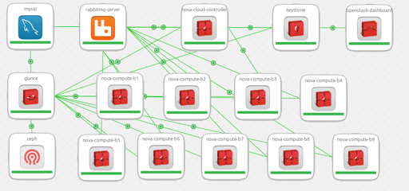

{kind=link}
<span
style=“color: rgba(0 , 0 , 0 , 0.75); font-family: "source serif pro" , serif; font-size: 20px; white-space: pre-wrap;“>
<span
style=“color: rgba(0 , 0 , 0 , 0.75); font-family: "source serif pro" , serif; font-size: 20px; white-space: pre-wrap;“>Con
este titulo más parecido a un capitulo de Harry Potter, os presento el
Orquestador para Linux Container (LXD). [Ver
enlace](https://jujucharms.com/)<span
style=“color: rgba(0 , 0 , 0 , 0.75); font-family: "source serif pro" , serif; font-size: 20px; white-space: pre-wrap;“>.
<span
style=“color: rgba(0 , 0 , 0 , 0.75); font-family: "source serif pro" , serif; font-size: 20px; white-space: pre-wrap;“>
|  |
| OpenStack / LXD + JujuCharms (https://jujucharms.com/) |
{kind=link}
<span
style=“color: rgba(0 , 0 , 0 , 0.75); font-family: "source serif pro" , serif; font-size: 20px; white-space: pre-wrap;“>Como
si por arte de “Magia” se tratase,
“conjure-up<span
style=“color: rgba(0 , 0 , 0 , 0.75); font-family: "source serif pro" , serif; font-size: 20px; white-space: pre-wrap;“>”
es la forma más rápida (dependerá de tus recursos principalmente el
disco duro SSD) de crear un cluster Kubernetes perfectamente configurado
y listo para trabajar.
<span
style=“color: rgba(0 , 0 , 0 , 0.9); font-family: , , "blinkmacsystemfont" , "segoe ui" , "roboto" , "helvetica neue" , "fira sans" , "ubuntu" , "oxygen" , "oxygen sans" , "cantarell" , "droid sans" , "lucida grande" , "helvetica" , "arial" , sans-serif , "apple color emoji" , "segoe ui emoji" , "segoe ui emoji" , "segoe ui symbol"; font-size: 20px; white-space: pre-wrap;“>
<span
style=“color: rgba(0 , 0 , 0 , 0.9); font-family: , , "blinkmacsystemfont" , "segoe ui" , "roboto" , "helvetica neue" , "fira sans" , "ubuntu" , "oxygen" , "oxygen sans" , "cantarell" , "droid sans" , "lucida grande" , "helvetica" , "arial" , sans-serif , "apple color emoji" , "segoe ui emoji" , "segoe ui emoji" , "segoe ui symbol"; font-size: 20px; white-space: pre-wrap;“>Limitaciones
<span
style=“color: rgba(0 , 0 , 0 , 0.75); font-family: "source serif pro" , serif; font-size: 20px; white-space: pre-wrap;“>
<span
style=“color: rgba(0 , 0 , 0 , 0.75); font-family: "source serif pro" , serif; font-size: 20px; white-space: pre-wrap;“>Si
deseas trabajar “localmente” en un Host, se presentan ciertas
limitaciones técnicas a la hora de utilizar conjure-up, o incluso
“juju”.
<span
style=“color: rgba(0 , 0 , 0 , 0.75); font-family: "source serif pro" , serif; font-size: 20px; white-space: pre-wrap;“>
La instalación local solamente contempla trabajar con un “equipo
físico (hardware)“, aunque la herramienta juju permite trabajar con
múltiples proveedores de Cloud (Azure, Google Cloud , AWS) será
utilizando LXD localmente cuando más partido se le puede sacar a
estar herramienta.
Networking, se debe diseñar muy bien inicialmente todo lo necesario
para la comunicación entre los contenedores, así como la publicación
de los recursos. Si trabajas con un cluster Kubernetes ya tendrás
cierta experiencia en ello. No obstante, hay que realizar un buen
planteamiento de networking antes de comenzar. Sobre todo con el
objetivo de la publicación de los recursos.
Esas son las principales “limitaciones”, puesto que si deseamos disponer
de múltiples Host (bare metal / hardware) la opción de utilizar
conjure-up “localmente” no contempla de momento la capacidad de
“clustering” que trae LXD 3.0. Por lo que el diseño de networkin inicial
será fundamental para ser capaz de comunicar varios Host (Hardware / VM)
entre si, y las APP contenidas en LXD. Un ejemplo claro, es desplegar
todo un cluster Kubernetes en un Host (localhost) y luego querer ampliar
la capacidad del cluster añadiendo “Worker / Nodos al cluster” en otros
Host para alta disponibilidad y recursos. Esto requiere de un diseño de
la red (previo al despliegue) y “tunning” a nivel de networking para
lograrlo. Puesto que la herramienta de momento (como he comentado
anteriormente) no contempla la capacidad de utilizar la funcionalidad
nativa de clustering.
<span
style=“color: rgba(0 , 0 , 0 , 0.75); font-family: "source serif pro" , serif; font-size: 20px; white-space: pre-wrap;“>
<span
style=“color: rgba(0 , 0 , 0 , 0.75); font-family: "source serif pro" , serif; font-size: 20px; white-space: pre-wrap;“>Cómo
parece lógico, la opción de utilizar LXD, es evitar utilizar
HyperV/VMWare en tus servidores locales, creando tu propia Cloud con los
recursos hardware directamente con LXD, que por otro lado, mejoran los
resultados al trabajar con lo que denominan pure-container hypervisor
[info<span
style=“color: rgba(0 , 0 , 0 , 0.75); font-family: "source serif pro" , serif; font-size: 20px; white-space: pre-wrap;“>].
<span
style=“color: rgba(0 , 0 , 0 , 0.75); font-family: "source serif pro" , serif; font-size: 20px; white-space: pre-wrap;“>
<span
style=“color: rgba(0 , 0 , 0 , 0.75); font-family: "source serif pro" , serif; font-size: 20px; white-space: pre-wrap;“>Por
tanto, si quieres trabajar en producción con LXD + juju como
orquestador, te recomiendo:
<span
style=“color: rgba(0 , 0 , 0 , 0.75); font-family: "source serif pro" , serif; font-size: 20px; white-space: pre-wrap;“>
Una Host con al menos 128GB RAM, 4 CPUS, disco duro SSD local +
cabina (storage) con direct attach de tipo SSD,
U<span
style=“color: rgba(0 , 0 , 0 , 0.75); font-family: "source serif pro" , serif; font-size: 20px; white-space: pre-wrap;“>n
según Host de igual capacidad conectado a la cabina storage (direct
Attach)
<span
style=“color: rgba(0 , 0 , 0 , 0.75); font-family: "source serif pro" , serif; font-size: 20px; white-space: pre-wrap;“>
<span
style=“color: rgba(0 , 0 , 0 , 0.75); font-family: "source serif pro" , serif; font-size: 20px; white-space: pre-wrap;“>Con
esto montar dos “cluster locales kuebernetes” y utilizar la capacidad de
federación entre cluster de kubernetes, que permitirá repartir y
balancear los recursos entre los cluster federados.
[info<span
style=“color: rgba(0 , 0 , 0 , 0.75); font-family: "source serif pro" , serif; font-size: 20px; white-space: pre-wrap;“>]
<span
style=“color: rgba(0 , 0 , 0 , 0.75); font-family: "source serif pro" , serif; font-size: 20px; white-space: pre-wrap;“>**
<span
style=“color: rgba(0 , 0 , 0 , 0.75); font-family: "source serif pro" , serif; font-size: 20px; white-space: pre-wrap;“>V<span
style=“color: rgba(0 , 0 , 0 , 0.9); font-family: , , "blinkmacsystemfont" , "segoe ui" , "roboto" , "helvetica neue" , "fira sans" , "ubuntu" , "oxygen" , "oxygen sans" , "cantarell" , "droid sans" , "lucida grande" , "helvetica" , "arial" , sans-serif , "apple color emoji" , "segoe ui emoji" , "segoe ui emoji" , "segoe ui symbol"; font-size: 20px; white-space: pre-wrap;“>entajas**
<span
style=“color: rgba(0 , 0 , 0 , 0.75); font-family: "source serif pro" , serif; font-size: 20px; white-space: pre-wrap;“>
<span
style=“color: rgba(0 , 0 , 0 , 0.75); font-family: "source serif pro" , serif; font-size: 20px; white-space: pre-wrap;“>No
todo iban a ser limitaciones, para el área DevOps y el ciclo de CI/CD
Integración continua) todo son ventajas:
Montar un cluster Kubernetes rápidamente totalmente operativo.
Desplegar Jenkins (integración continua) y Sonar (Auditoria de
Código)
Y Probar las aplicaciones en un entorno igual al de producción en
los principales Proveedores de Cloud.
Happy Hacking !!! DevOps ! :)